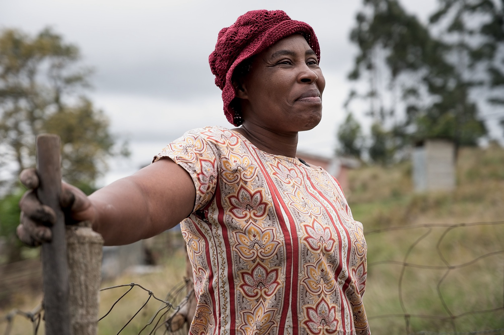

Thembi Ntuli
In KwaNdelu, determined and community-minded Thembi Ntuli is one of many women shaping a stronger future through Thanda's farming program. What began as a way to grow food and support her children's early learning has become a source of confidence and connection as she shares her skills with new farmers. While Thembi tends her garden, her children learn and grow in Thanda's ECD and literacy programs, creating a circle of care that supports the whole family.
Impact pathway
Through Thanda's farming, ECD, and literacy programs, Thembi and her children enter an ecosystem of support that builds skills and stability at home. With time, Thembi begins sharing her farming knowledge with other parents — extending the same care she once received. A ripple of food security, learning, and opportunity across the community.